NBC Sports Live Extra
The Live Extra suite of apps allows you to watch NBC Sports coverage of live events and highlights from NBC and NBC Sports Network. The NBC Sports Live Extra apps for Windows Store and Windows Phone 8 were released in early 2014, just in time for the Winter Olympics in Sochi.
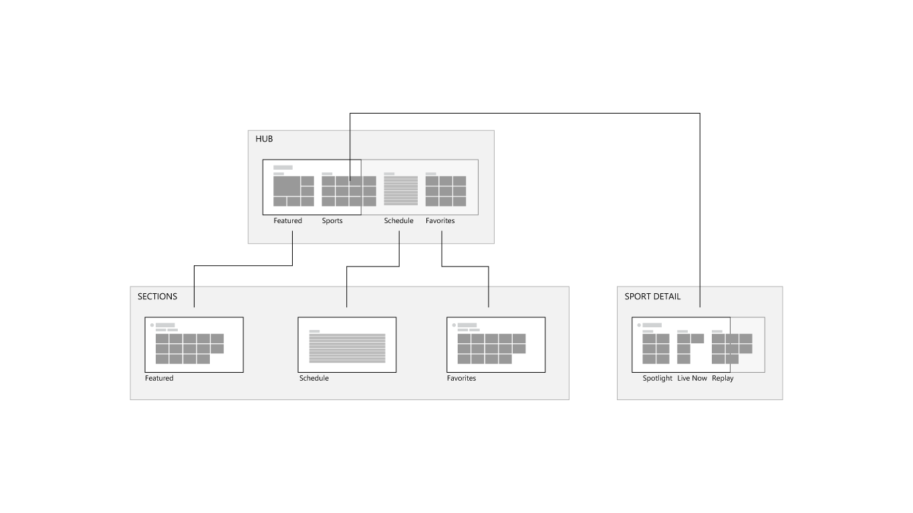
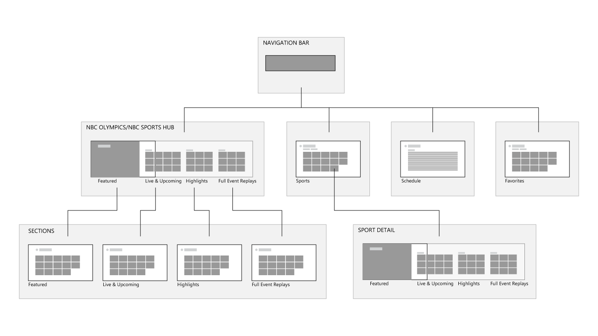
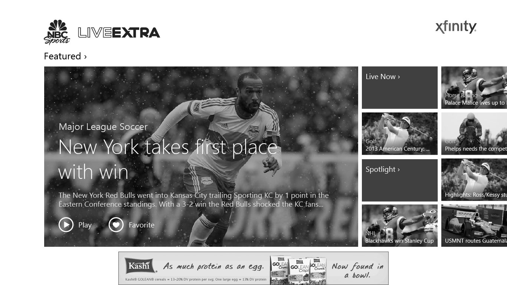
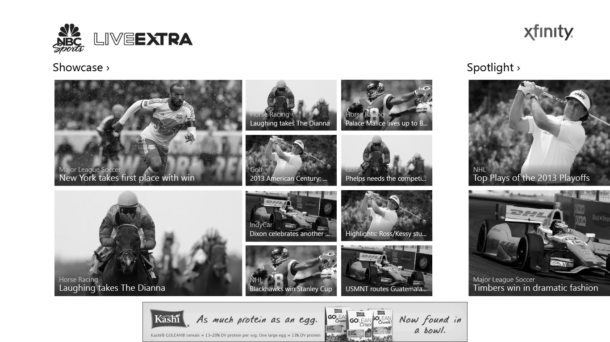
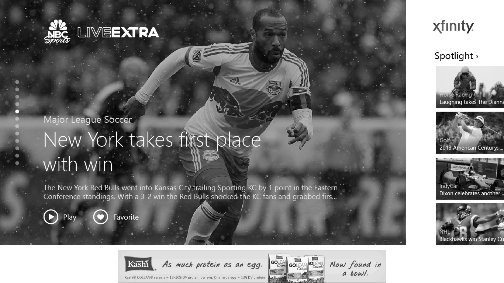
Windows Store app
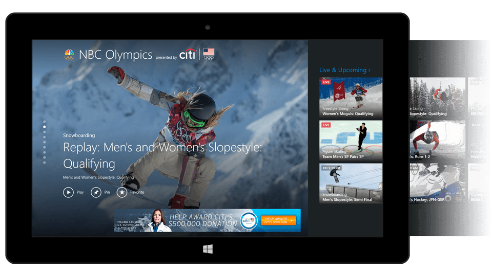
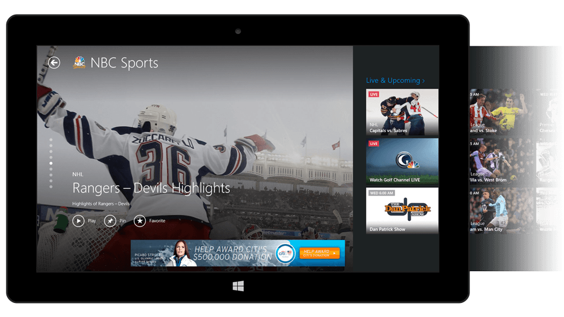
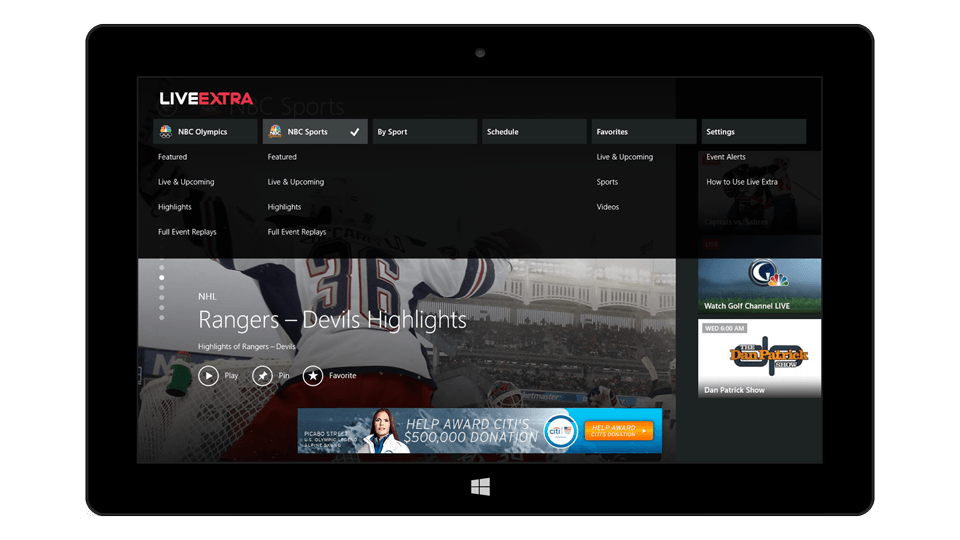
Windows Phone 8 app
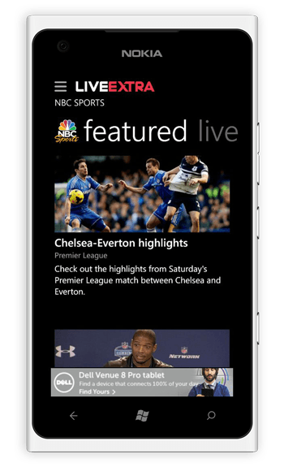
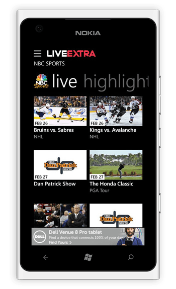
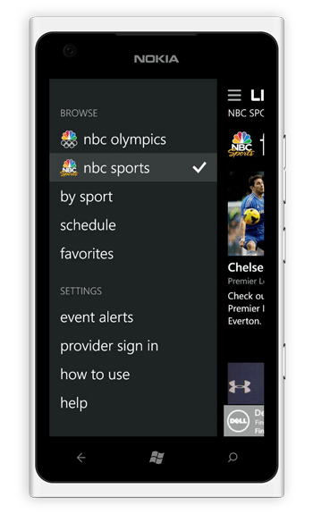
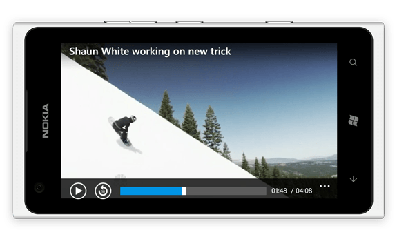